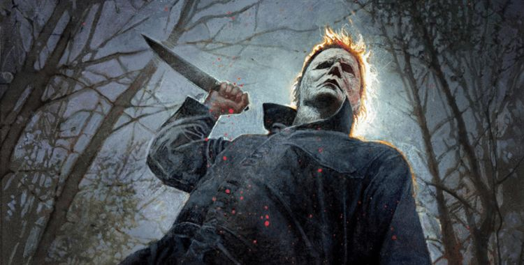

 Filme 1978
Filme 1978
Em 1963, durante uma noite fria de Halloween, o pequeno Michael Myers, de seis anos, assassina brutalmente sua irmã
adolescente, Judith. Ele é condenado e fica detido por 15 anos em uma instituição sob vigilância constante do Dr. Sam Loomis. Em 1978,
na véspera de Halloween, Michael rouba um carro e escapa do sanatório Smith's Grove. Ele retorna à sua pacata cidade natal de
Haddonfield, Illinois, onde procura suas próximas vítimas.